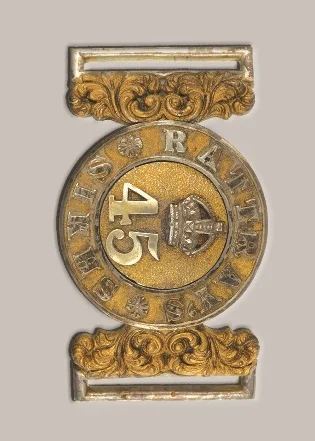
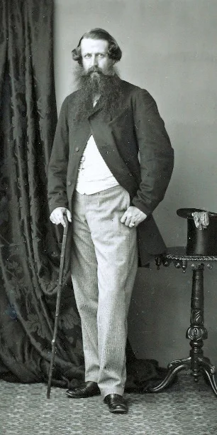
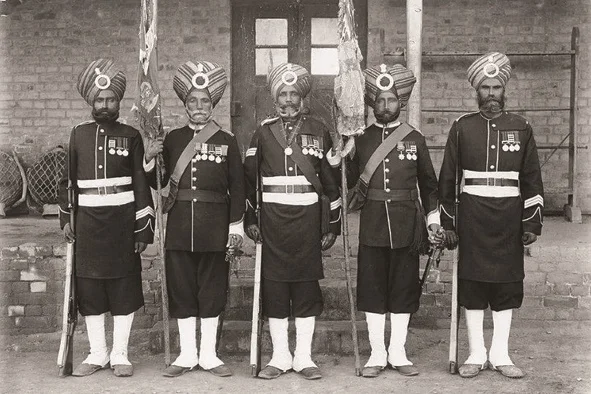
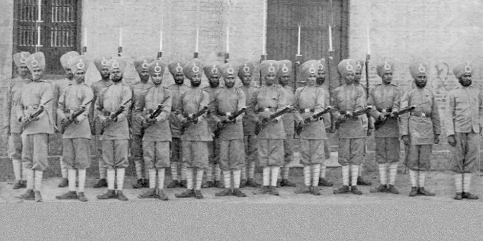
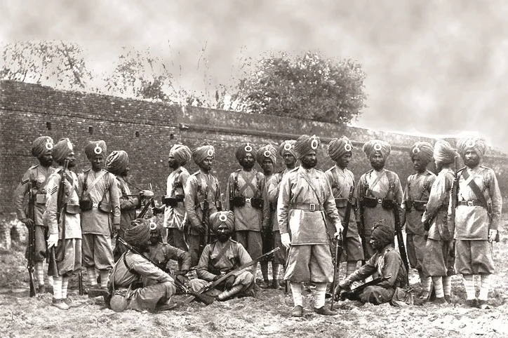
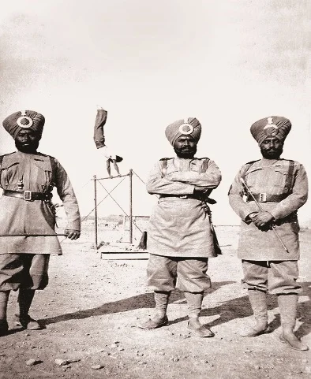
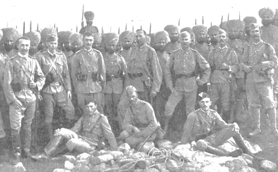

45ਵੀਂ ਰੈਟਰੇਜ਼ ਸਿੱਖ







ਸ਼੍ਰੇਣੀ: ਉੱਤਰਾਧਿਕਾਰੀ ਬਟਾਲੀਅਨਾਂ
ਰੈਜੀਮੈਂਟ: ਸਿੱਖ ਰੈਜੀਮੈਂਟ
ਐਕਸਐਲਵੀ ਰੈਟਰੇਜ਼ ਸਿੱਖ, ਜੋ ਮੂਲ ਰੂਪ ਵਿੱਚ ਬੇੰਗਾਲ ਮਿੱਲਟਰੀ ਪੁਲਿਸ ਬਟਾਲੀਅਨ ਸਨ, ਨੂੰ 31 ਜਨਵਰੀ 1856 ਨੂੰ ਕੈਪਟਨ ਥੋਮਸ ਰੈਟਰੇ ਨੇ ਲਾਹੌਰ ਵਿੱਚ ਖੜਾ ਕੀਤਾ। ਸ਼ੁਰੂਆਤ ਵਿੱਚ ਇਸ ਵਿੱਚ ਘੁੜਸਵਾਰੀ ਅਤੇ ਦਸ ਪਦਾਧਿਕਾਰੀ ਕੰਪਨੀਆਂ ਸ਼ਾਮਲ ਸਨ, ਅਤੇ ਯੂਨਿਟ ਸਿੱਖਾਂ, ਪੰਜਾਬੀ ਮੁਸਲਮਾਨਾਂ ਅਤੇ ਡੋਗਰਿਆਂ ਤੋਂ ਬਣੀ ਹੋਈ ਸੀ। 1862 ਤੱਕ ਘੁੜਸਵਾਰੀ ਨੂੰ ਵੱਖ ਕਰ ਦਿੱਤਾ ਗਿਆ, ਅਤੇ ਗੈਰ-ਸਿੱਖ ਤੱਤ 1885 ਤੱਕ ਹਟਾ ਦਿੱਤੇ ਗਏ, ਜਿਸ ਨਾਲ ਬਟਾਲੀਅਨ ਇੱਕ ਖ਼ਾਲਿਸ ਸਿੱਖ ਯੂਨਿਟ ਬਣ ਗਿਆ। ਐਕਸਐਲਵੀ ਨੇ 1856 ਦੇ ਅੰਤ ਵਿੱਚ ਸਾਂਥਾਲ ਪਰਘਨਿਆਂ ਵਿੱਚ ਸੇਵਾ ਦਿੱਤੀ ਜਦੋਂ ਬੇੰਗਾਲ ਦੇ ਮੂਲ ਆਧਾਰ ਇਨਫੈਂਟਰੀ ਵਿੱਚ ਵਿਆਪਕ ਅਣਪਾਲਣ ਦਾ ਸਮਾਂ ਸੀ। ਪੰਜਾਬ ਦੇ ਅਧੀਨ ਆਉਣ ਤੋਂ ਬਾਅਦ ਖੇਤਰਕ ਵਿਰੋਧ ਦੇ ਬਾਵਜੂਦ, ਸਿੱਖ ਫੌਜਾਂ ਨੇ ਵਫ਼ਾਦਾਰੀ ਦਿਖਾਈ ਅਤੇ ਬਹੁਤ ਉਚੀ ਖ਼ਿਆਤੀ ਹਾਸਲ ਕੀਤੀ। ਬਟਾਲੀਅਨ ਨੂੰ 1922 ਵਿੱਚ 3ਰੀ ਬਟਾਲੀਅਨ, 11ਵੇਂ ਸਿੱਖ ਰੇਜੀਮੈਂਟ ਦਾ ਨਾਮ ਦਿੱਤਾ ਗਿਆ, ਅਤੇ ਬਾਅਦ ਵਿੱਚ 1945 ਵਿੱਚ ਇਸ ਨੂੰ 3ਰੀ ਬਟਾਲੀਅਨ, ਦ ਸਿੱਖ ਰੇਜੀਮੈਂਟ ਦਾ ਨਵਾਂ ਨਾਮ ਦਿੱਤਾ ਗਿਆ।

ਮੋਬਾਈਲ 'ਤੇ ਖੋਲ੍ਹੋ
ਆਪਣੇ ਫ਼ੋਨ 'ਤੇ ਅੰਗਰੇਜ਼ੀ, ਹਿੰਦੀ ਜਾਂ ਪੰਜਾਬੀ ਵਿੱਚ ਦੇਖਣ ਲਈ ਇਸ QR ਕੋਡ ਨੂੰ ਸਕੈਨ ਕਰੋ।